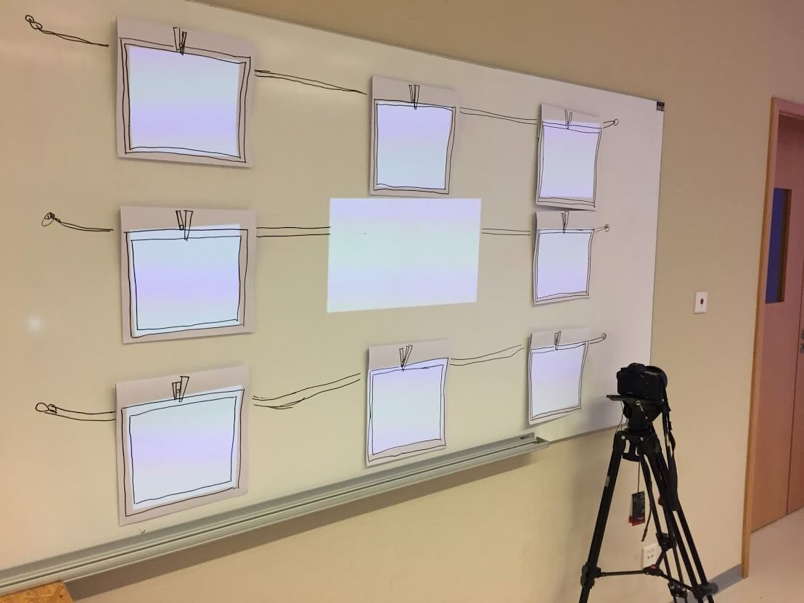
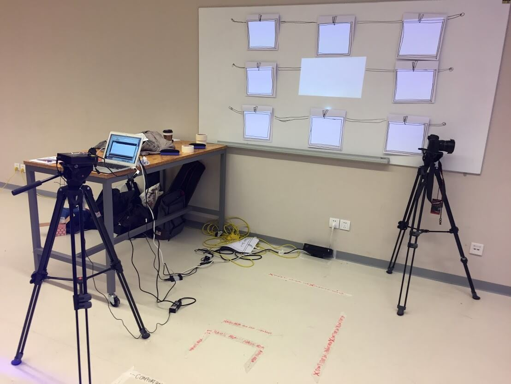
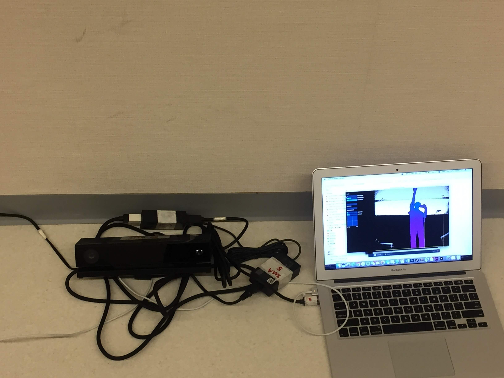
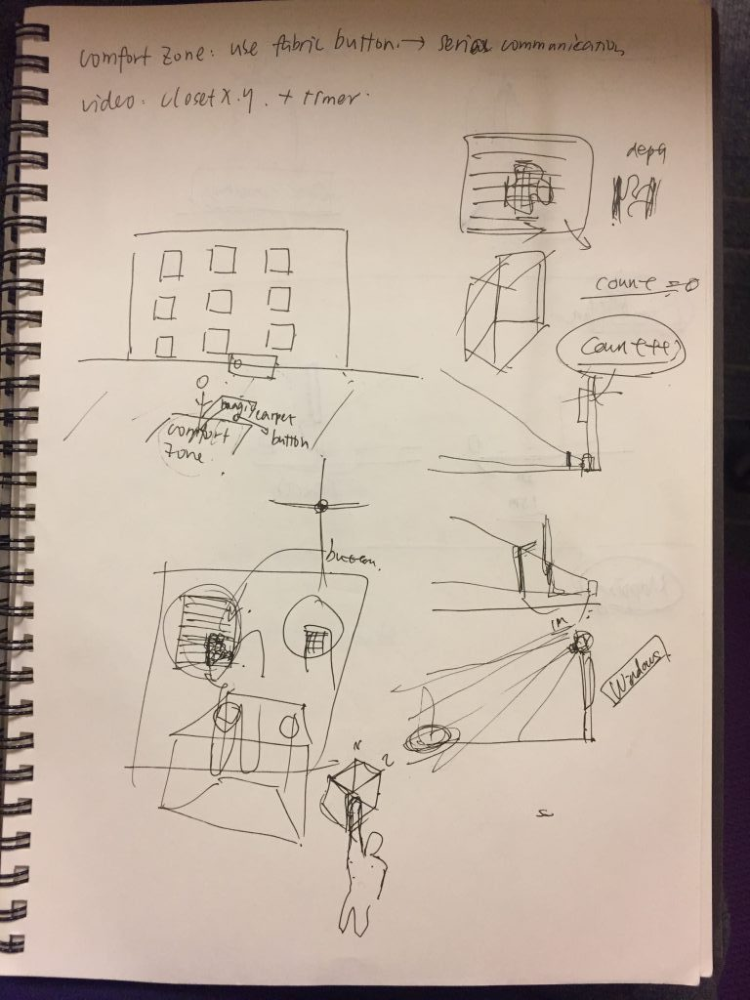
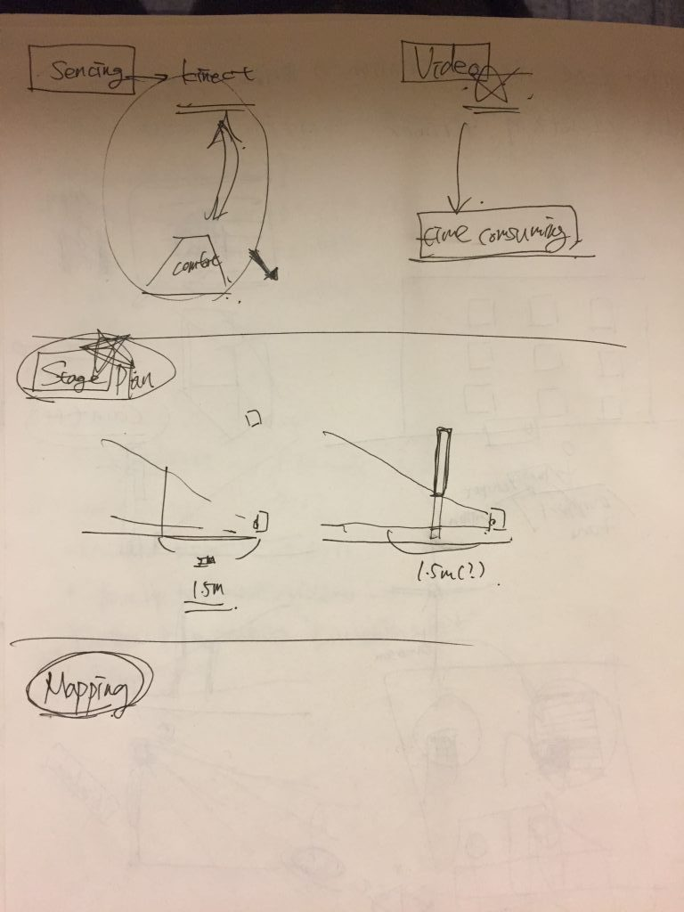

Are you one of those students who are shy and stay in your own friend’s bubble at school? Do you want to take a step out and see what will happen? Step Out is a public installation that encourages students to step out their comfort zones and
be more active at school. The project is made with Kinect, Projection Mapping Processing.
“Step Out” contains Kinect and eight photo frames that hanging on the wall. The installation starts with letting the user stand in the comfort area and facing the photo frames. Then the instruction video encourages the user to leave the
comfort zone. Once the visitor decides to take a step out, the installation will be triggered. It asks the visitor to reach out the hand and wave it a photo frame, and say hi to it. Then the visitor will find out that a classmate will show up
on the frame and say “Hey, would you like to be my friends?” Through the interaction, visitors can experience the importance of stepping out the comfort zone at school.


This is the first Kinect project that I made in college. Kinect can recognize the depth of one area that is sensed, then it can be converted to the number of pixels of the area. Thus, I made various “invisible” buttons at the frame’s positions. Once visitor’s hand is at the area, the number of pixels will increase and be greater than the default number that I set. To be more efficient, I firstly just used keyCode to trigger the videos and tested with MadMapper. After all the videos got projected correctly on the photo frames, I replaced the keyCode with the “button”. Based on the photo frame’s coordination, I adjusted the buttons’ positions several times until it matched with my hand gestures.

From the user test, I observed that based on every visitor’s height, the position of hand reach-out was different. Since the button’s coordination is based on my height. Sometimes, visitor’s movement could accidentally trigger the video on other frames. Thus, for future development, I want to change the base of the button’s coordination. It will also be nice to add the point cloud of the visitor. It will create a more interactive experience between the visitor and the static photo frames.


< < back to check other projects
back to top